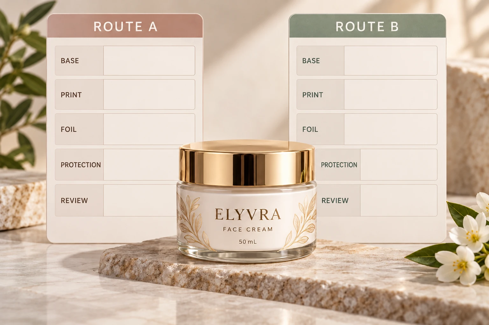

Draw the proposed order
Ask the supplier to identify the base face, printed design, relevant transfer process and protective layer. Have it explain which operation follows which for the actual proposed route. A simple numbered cross-section or process list can be enough when its meaning is acknowledged.
Keep the face side and viewing direction clear. A phrase such as foil under matte can be interpreted differently unless the actual construction and operations are shown. Do not prescribe a universal foil-first or coating-first rule from this article.
The foil-versus-ink guide chooses the decorative effect. The matte-film versus varnish guide identifies protective construction. This decision concerns their proposed combination, rather than reopening those broader choices without a reason.
Ask what the finish must preserve
State the motif's visual objective and the relevant handling requirement. Is the brand trying to retain a sharp reflection, produce a quieter appearance or protect the surrounding print? Different objectives can lead to different supported proposals.
Identify which areas receive the coating or film and whether any area is intentionally excluded. A partial finish needs its own clearly marked artwork instruction. Ask who prepares that instruction and how the brand will review it.
Do not infer the combined result from separate swatches. An isolated foil reference and an unrelated matte film sample may explain ingredients in the proposal while leaving the finished appearance unresolved. Keep their limitations in the sample record.
Confirm compatibility with the production party
Ask the converter to identify the relevant transfer product, coating or laminate, application sequence and supported base construction. Obtain its assessment of the actual combination. This guide supplies no chemical-compatibility claim, cure setting or adhesion threshold.
If the supplier proposes an adjustment, ask what it changes visually and operationally. A design correction may need brand approval; another material may need updated construction evidence. Do not accept a broad similar finish statement as a substitute for those identified changes.
Later operations still matter. If the pack needs batch coding or a specific application arrangement, have the relevant operator review the complete finished supply. A finish chosen to protect the decorative print does not automatically qualify the later code panel or line route.
Review the complete sample
Use the actual artwork where practical, or record which features differ in a representative reference. Identify the complete sample construction and how it connects to the proposed sequence. A digital layered drawing communicates intent but does not demonstrate physical finish performance.
Compare under consistent viewing conditions and on the relevant container when the appearance depends on the pack. Keep the inspection focused on the feature that could change the choice. Do not interpret a softer reflection as a defect if that is the appearance the team deliberately requested.
If a resistance claim is part of the requirement, agree an appropriate evaluation with the technical parties. A combined finish can look acceptable while the intended handling remains unreviewed. Keep appearance and functional acceptance separate in the record.
| Field | Input | Release question |
|---|---|---|
| Objective | Desired reflection and intended handling | What must the combination accomplish? |
| Construction | Base, print, transfer and protection references | Which exact components are proposed? |
| Sequence | Supplier-acknowledged order and viewing side | Can everyone interpret the same stack? |
| Coverage | Protected, exposed and excluded artwork areas | Does the instruction match the design? |
| Sample | Complete reference and known differences | What does the physical evidence establish? |
| Function | Agreed evaluation if required | Has relevant handling been addressed? |
| Approval | Brand and technical acceptance scope | Which part is still pending? |
Define objective and construction first. Obtain the supported sequence, review any artwork change and assess the complete sample. Hold the combined finish if the only evidence consists of unrelated individual swatches or an unacknowledged layer sketch.

Let the visual objective choose the route
A hypothetical brand wanting a subdued overall surface may accept a supported combined finish whose reflection differs from a bare foil reference. Its approval should name that final appearance rather than preserve the earlier swatch as an unexplained competing target.
Another design depends on a bright localized motif. The converter may propose a different supported sequence, coverage or construction to evaluate. The brand should compare that actual proposal and quotation, rather than demand two isolated samples remain unchanged when combined.
For cosmetic label quotations, send the artwork, marked decorative and protected areas, container, quantity and accepted appearance reference. Ask for the complete proposed sequence and relevant sample scope. The form prepares a message; send references through email or WhatsApp. Give the final combination its own identifiable approval.